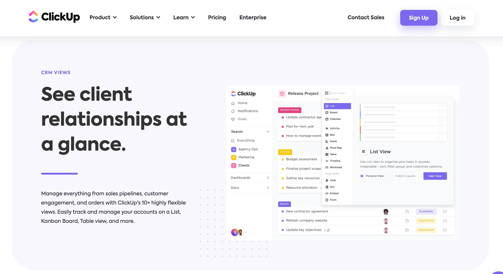

SHORT ON TIME? HERE’S A QUICK SUMMARY
While ClickUp is primarily recognized as a versatile project management and productivity platform, it boasts a level of versatility and functionality that extends beyond project management alone. In fact, ClickUp can be harnessed effectively as a Customer Relationship Management (CRM) tool to help businesses organize and manage their leads and customer interactions. In this comprehensive review, we'll delve into ClickUp's capabilities as a CRM solution, exploring how it can empower your organization to streamline lead management, foster better customer relationships, and enhance overall business efficiency. Whether you're seeking a dedicated CRM or a project management system with CRM capabilities, ClickUp offers a robust and adaptable solution worth considering.
While ClickUp is primarily recognized as a versatile project management and productivity platform, it boasts a level of versatility and functionality that extends beyond project management alone. In fact, ClickUp can be harnessed effectively as a Customer Relationship Management (CRM) tool to help businesses organize and manage their leads and customer interactions. In this comprehensive review, we'll delve into ClickUp's capabilities as a CRM solution, exploring how it can empower your organization to streamline lead management, foster better customer relationships, and enhance overall business efficiency. Whether you're seeking a dedicated CRM or a project management system with CRM capabilities, ClickUp offers a robust and adaptable solution worth considering.

👍 PROS:
- Used by more than 800,000 highly productive teams like IBM, Netflix, Spotify, etc.
- Comprehensive Agile project management capabilities
- Unlimited Gantt charts
- Sleek and intuitive interface
- Impressive customization capabilities
- Tons of collaboration features, such as real-time chat, comments, in-app video recording, and seamless file sharing
- Over 15 different ways to visualize project progress and data
- Real-time reporting
- Extensive feature set, even on budget-friendly plans
- Team view for efficient task organization by team member
- Live chat in real-time
- Robust free plan with unlimited tasks and users
👎 CONS:
- The free plan's file storage capacity is capped at only 100MB
- The mobile app lacks certain web functions
- Steep initial learning curve
- The multitude of features can be overwhelming
Get Clickup CRM - Streamline Your Sales Process!
SEE WHAT USERS HAVE TO SAY
"ClickUp has helped our agency immensely by keeping our work organized, prioritized, and prepared for deadlines. Its features and integrations allow us to collaborate seamlessly on the platform, which leads to fewer back-and-forths with clients to clarify details and faster turnaround times for the brands we work with!"
"When it comes to upgrading our own system, we've tried many different management solutions - from Basecamp and Jira all the way through Asana, Trello and ZenHub. But sometimes they felt too expensive or just "too old", so finally we decided on ClickUp Business plan last year - what a game changer that was! Now transparency is guaranteed as everyone knows exactly where their tasks are at any given moment. It's been one of the best decisions for 2022 so far: reliable automation & estimates plus multiple views of the same boards...it really has everything you need!"
"ClickUp has helped my team plan large product launches and myself track my projects and documentation. It's such a powerful tool and I love the ClickUp University courses that make it easy to understand. There's also a feature request site where the team responds fairly quickly, and the gamified VIP program is fun!"
WHO SHOULD USE CLICKUP?
ClickUp CRM is designed to cater to a wide range of users, making it a versatile solution for various industries and business sizes. Here are some scenarios where ClickUp CRM might be a good fit:
Small to Medium-sized Businesses (SMBs): ClickUp CRM is well-suited for SMBs looking for an all-in-one solution that combines project management, task tracking, and customer relationship management. It can help streamline processes and improve collaboration within small to medium-sized teams.
Sales and Marketing Teams: Sales and marketing professionals can benefit from ClickUp CRM's lead management, contact organization, and communication tracking features. It allows teams to efficiently manage leads, automate workflows, and measure campaign effectiveness.
Freelancers and Solopreneurs: Individuals or small businesses with limited resources can use ClickUp CRM to manage their contacts, tasks, and projects. The platform offers flexibility to adapt to the specific needs of freelancers and solopreneurs.
Agencies and Service Providers: Agencies and service providers handling multiple clients can use ClickUp CRM to manage client relationships, track project progress, and maintain a clear overview of ongoing work. The customizable nature of ClickUp allows for tailored workflows.
Non-profit Organizations: Non-profits can use ClickUp CRM to manage donor relationships, track fundraising efforts, and streamline their operations. The platform's flexible features can be adapted to meet the unique needs of non-profit organizations.
WHAT ARE THE FEATURES?
ClickUp is primarily known as a project management and productivity tool, but it can also be utilized as a basic CRM (Customer Relationship Management) tool, especially for smaller businesses and teams. While it may not have the extensive CRM capabilities of dedicated CRM software, ClickUp offers several features that can be used to manage customer interactions and relationships. Here are some of the key features of ClickUp as a CRM tool:
Advanced Real-Time Reporting Capabilities: ClickUp simplifies the process of creating, generating, and tailoring reports, providing a seamless means to gain deeper insights into your team's performance. Utilize this tool to delve into individual team members' schedules, including their current project engagements, missed deadlines, and completed tasks.
The inclusion of over 50 budget variations proves invaluable when constructing custom dashboards, facilitating a concise high-level project overview. Additionally, ClickUp's reporting tools enable precise tracking of task progress and overall project advancement in real-time.
Dashboards & Views: Dashboards and Views within ClickUp provide the flexibility to visualize your projects in diverse formats. ClickUp offers a range of project views, including the list view, board view, Gantt chart view, and calendar view, each tailored to specific project management requirements.
For instance, the Gantt chart view is an invaluable tool for comprehending project timelines, while the board view excels in agile project management scenarios. While many of the available views are standard and widely used, there are a few standout options worth highlighting.
ClickUp also integrates a mind map feature that facilitates the visualization of interconnections among various elements within your workspace, proving useful for identifying relationships between spaces, lists, and tasks.
Another distinctive feature is the Google Maps overlay for tasks, accompanied by an associated location field, which proves particularly beneficial for sales teams and organizations with distributed offices. The true standout is the Team board, offering an immediate overview of team resource allocation. It's important to note that access to this feature requires an upgrade to the Unlimited plan.
Here's a list of all the Views that you can easily switch to at any time to suit your specific needs:
List
Board
Calendar
Team
Gantt
Activity
Timeline
Workload
Table (Spreadsheets)
Map
Mindmap
Whiteboards
Doc
Chat
Form
Embed
Account Management: ClickUp's Account Management feature equips you to effectively oversee data pertaining to both current and previous clients. This encompasses meticulous tracking of their activities, encompassing close dates, engagement statuses, payment statuses, and client types. The feature extends to include the incorporation of subtasks, checklists, and attachments, facilitating a comprehensive and all-encompassing overview of all client-related matters. Additionally, it provides a clear depiction of the progress and priority levels associated with each client engagement.
Task Management: In ClickUp, task management offers you a wide range of functionalities that can streamline your workflow. It all starts with the basics: creating tasks, setting due dates, assigning them to team members, adding descriptions, attaching files, and setting priorities. But ClickUp takes task management to the next level.
You can engage in collaborative discussions within task comment threads, making it easier to communicate with your team and keep everyone on the same page. You can also use tags to keep your tasks organized efficiently. Plus, ClickUp allows you to ensure that tasks are completed by integrating checklists into your tasks. This means you can break down complex tasks into smaller steps, making it easier to track progress and ensure nothing falls through the cracks. Task management in ClickUp is designed to boost your productivity and help you stay on top of your projects.
Automations: One of ClickUp's standout features is its ability to automate repetitive tasks effortlessly. With a library of over 100 pre-built automation options, you can streamline workflows, automate routine tasks, and ensure smooth project transitions.
During our testing, we found it remarkably user-friendly to set up and customize automation actions tailored to our specific needs. This not only saves time but also ensures consistency within team workflows. ClickUp's automation extends beyond the platform by integrating with external apps, simplifying the process of bringing everything into a unified workflow.
It's important to note that while the ClickUp free plan offers generous automation limits of up to 100 runs and 50 active rules, businesses in need of more automation capabilities may find the Business plan a better fit, as it offers unlimited active automation rules and up to 10,000 automation runs.
Integrations: In ClickUp, you have the power to seamlessly connect your ClickUp workspace with a wide range of third-party applications and services. ClickUp offers you an extensive selection of integrations, including popular tools like Google Drive, Slack, Trello, and many others.
Even if you're using the free plan, you can still get a taste of how integrations work. Adding a new integration is a straightforward process: simply choose the app you want from the automations menu, select the automation you want to apply, and then log in using your credentials for that specific site. ClickUp takes care of the rest, unless you want to set up a custom integration trigger, which requires some knowledge of the APIs for each tool you wish to use.
Additionally, ClickUp seamlessly integrates with third-party integration platforms like Zapier and Make. This opens up a world of possibilities, allowing you to connect with even more platforms effortlessly, essentially creating a comprehensive virtual office environment that caters to your specific needs and preferences.
Collaboration Features: In ClickUp, collaboration features are designed to be your go-to tools for enhancing communication and teamwork within your projects. You can seamlessly interact with tasks, leaving comments, attaching files, and engaging in real-time chat right within the platform.
The Chat feature in ClickUp is particularly impressive. It's a robust tool that takes team communication and collaboration to the next level. With real-time collaboration, it consolidates all your conversations, eliminating the need to juggle multiple communication tools.
Chat serves as a centralized hub for all your team communication needs, offering a unified platform for sharing updates, linking resources, and working together seamlessly. What's even more impressive is its integration with other tools in the ClickUp suite.
Within the chat interface, you have the ability to tag team members and assign action items, making task delegation and tracking a breeze. Using @mentions ensures that your team members are directly involved in relevant conversations, ensuring efficient and targeted communication.
Furthermore, this feature allows you to share project links, embeds, and various content formats, making it even easier for your team to access essential resources and collaborate effectively.
Time Tracking Reporting: ClickUp simplifies workplace time management through its adaptable time tracking features, enhancing your ability to concentrate on tasks and optimize time utilization. Employ this tool to effectively monitor time, establish task duration estimates, attach pertinent notes, and access comprehensive reports, thereby gaining heightened command over your work hours. Furthermore, you can designate billable time segments, ensuring accurate invoice expense calculation, and conveniently adjust tracked time as required.
Templates: With ClickUp's Templates feature, you have a powerful tool at your disposal for simplifying task and project management. You can create predefined structures that are easy to replicate, saving you time and effort. These templates are incredibly flexible, allowing you to customize task details, dependencies, due dates, priorities, and more according to your specific needs. What's even more beneficial is the ability to apply these templates across various workspaces and teams, ensuring consistency in your organization's processes. You can also incorporate task dependencies within templates, guaranteeing that tasks are executed in the correct sequence. Furthermore, if you have tasks or projects that occur regularly, ClickUp offers recurring templates, making it a breeze to manage repetitive work. Templates in ClickUp are your key to increased efficiency, reduced errors, and the maintenance of consistency in your work processes, making them an indispensable feature for your project management and collaboration needs.
IS IT EASY TO USE?
Ease of use is a critical factor when evaluating CRM software, as it directly impacts user adoption and productivity. ClickUp CRM strikes a balance between feature-rich capabilities and user-friendly design.
USER INTERFACE
ClickUp's interface is thoughtfully designed with user-friendliness at its core. It boasts a clean and well-organized layout that ensures effortless navigation and easy access to the information you need. On the left sidebar, you'll find handy shortcuts to vital sections such as Contacts, Leads, and Tasks. Meanwhile, the customizable dashboard empowers you to arrange widgets for real-time insights that align with your priorities.
One standout feature worth highlighting is the ability to create custom views, providing you with the flexibility to fine-tune your CRM experience according to your specific requirements. Whether you have a preference for a Kanban board, favor a list view, or opt for a calendar view, ClickUp CRM adapts to suit your individual work preferences seamlessly.
DESKTOP AND MOBILE APPS
In ClickUp CRM, you have the convenience of both desktop and mobile apps, ensuring that you can access your CRM data from anywhere you need to. If you prefer working on your computer, the desktop app is available for both Windows and macOS, offering a seamless experience.
On the other hand, the mobile app, which is accessible on iOS and Android devices, is well-designed and provides a responsive interface. It empowers you to manage contacts, leads, tasks, and projects while you're on the move. This makes it an invaluable tool, especially if you're a field sales representative or a professional who needs to access CRM data while you're away from your desk.
ClickUp's mobile app is a handy tool for quick checks and responses, making it efficient for managing tasks on the go. It's particularly useful for checking notifications, tracking task progress, and maintaining effective communication through collaborative messaging. Keep in mind that the available views on the mobile app include lists, boards, calendars, docs, and chat.
What's even more convenient is that ClickUp's mobile app extends to the Apple Watch, which combines both smart and stylish features. This allows you to stay connected and access your tasks even when you're on the move.
ClickUp goes the extra mile by offering voice assistants that enable you to use voice commands for creating reminders, tasks, and checking notifications. The platform also enhances communication with email add-ons, making it possible for you to create tasks directly from emails and attach emails to specific tasks.
Excitingly, ClickUp is also actively working on integrating with Meta apps. This integration opens up new possibilities for digital marketers and social media professionals, allowing them to bring their work into the Metaverse for enhanced collaboration, insights, and project management.
In terms of usability, ClickUp CRM strives to make it relatively easy for you to get started and configure the CRM to match your specific needs. However, how straightforward it is to use may depend on the complexity of your workflow and the extent to which you choose to customize the platform to fit your unique requirements.
IS IT SAFE AND SECURE?
Security is a paramount concern when handling customer data, and ClickUp CRM takes this aspect seriously. The platform implements several security measures to protect user data and maintain compliance with industry standards.
Data Encryption: ClickUp CRM uses encryption protocols to secure data transmission and storage. This ensures that sensitive information, such as contact details and communication history, is safeguarded against unauthorized access.
Two-Factor Authentication: 2FA adds an extra layer of security to your account by requiring you to provide two forms of identification before granting access. Typically, this involves something you know (like your password) and something you have (such as a unique code sent to your mobile device). With 2FA enabled, even if someone obtains your password, they won't be able to access your ClickUp account without the second authentication factor. This helps protect your account from unauthorized access and enhances its overall security.
Access Controls: ClickUp CRM offers role-based access controls, allowing organizations to define user roles and permissions. This granular control ensures that only authorized personnel can access specific features and data within the CRM.
Regular Backups: Data loss prevention is a priority, and ClickUp CRM routinely backs up user data to prevent information loss due to unexpected events or technical issues.
Compliance: ClickUp CRM complies with industry regulations and standards, including GDPR for data protection. This commitment to compliance demonstrates the platform's dedication to data security and privacy.
HOW MUCH IS IT?
ClickUp CRM offers a tiered pricing model with various plans tailored to different business needs. The cost of ClickUp CRM depends on the plan you choose and the number of users in your organization. Here is an overview of the pricing options:
1. Free Plan:
If you're new to ClickUp and want to give it a try, the "Free Forever" plan is the perfect starting point. It's completely free and provides access to many of ClickUp's excellent features, allowing you to create unlimited projects and add as many users as needed. This option is ideal for personal use or those who are new to project management. Despite being a free plan, you still get access to all of ClickUp's premium tools. The only limitation is a 100MB storage limit.
2. Unlimited Plan (formerly Business Plan):
Priced at just $7 per month per user, ClickUp's most economical premium plan offers a remarkable value proposition. It not only encompasses all the features of the free plan but also provides additional perks such as access to over 1,000 automations, unlimited storage, and advanced reporting capabilities.
3. Business Plan:
If your business demands greater scalability and advanced capabilities, the Business Plan emerges as the obvious choice. With a monthly fee of $12 per user, this package grants your organization unfettered access to ClickUp's comprehensive feature repertoire. It not only extends the benefits of Google Single Sign-On (SSO) and unlimited teams but elevates the offering with advanced automation, granular time estimates for individual project turnaround times, efficient workload management, and the capability to export custom reports.
What truly distinguishes this package from the Unlimited plan is its steadfast commitment to bolstered security measures, encompassing two-factor authentication and an invaluable resource management chart. Tailored specifically for medium and large businesses, it caters to those seeking not only boundless tool access but also heightened security features to effectively safeguard their operations.
4. Enterprise Plan:
As the top-tier pricing plan tailored for larger enterprises, this plan builds upon the features offered in Business Plus. It includes advanced features like Enterprise API, availability compliant with HIPAA and MSA regulations, guided onboarding, and Single-Sign-On (SSO) capabilities. If this plan aligns with your organization's requirements, please reach out to the ClickUp sales team for a customized quote, as pricing may vary based on your specific needs.
IS THERE A FREE VERSION?
Yes! As we have mentioned in the previous section, ClickUp offers a Free Forever plan with absolutely no commitments. Even though it's free of charge, this plan boasts exceptional features, including unlimited tasks, unlimited free plan members, collaborative document editing, whiteboards, real-time chat, Kanban boards, in-app video recording, and more. It's an ideal choice for thrifty users seeking straightforward project management software.
CUSTOMER SUPPORT
If you're using any of ClickUp's plans, including the free one, you'll have access to their Help Centre 24/7, which provides valuable resources like ClickUp API documents, ClickUp University courses, pre-designed templates, and informative webinars. When you're on a paid plan, you can take advantage of the live support chat. For those on the Business and Business Plus plans, you'll also benefit from priority support, ensuring your issues are resolved promptly.
BOTTOMLINE
In summary, ClickUp stands out as a reliable and versatile CRM software solution. Its cost-effective pricing, customizable features, and powerful management tools empower teams to excel. While it may require some initial exploration, the benefits far outweigh any minor drawbacks.
"ClickUp has helped our agency immensely by keeping our work organized, prioritized, and prepared for deadlines. Its features and integrations allow us to collaborate seamlessly on the platform, which leads to fewer back-and-forths with clients to clarify details and faster turnaround times for the brands we work with!"
"When it comes to upgrading our own system, we've tried many different management solutions - from Basecamp and Jira all the way through Asana, Trello and ZenHub. But sometimes they felt too expensive or just "too old", so finally we decided on ClickUp Business plan last year - what a game changer that was! Now transparency is guaranteed as everyone knows exactly where their tasks are at any given moment. It's been one of the best decisions for 2022 so far: reliable automation & estimates plus multiple views of the same boards...it really has everything you need!"
"ClickUp has helped my team plan large product launches and myself track my projects and documentation. It's such a powerful tool and I love the ClickUp University courses that make it easy to understand. There's also a feature request site where the team responds fairly quickly, and the gamified VIP program is fun!"
WHO SHOULD USE CLICKUP?
ClickUp CRM is designed to cater to a wide range of users, making it a versatile solution for various industries and business sizes. Here are some scenarios where ClickUp CRM might be a good fit:
WHAT ARE THE FEATURES?
ClickUp is primarily known as a project management and productivity tool, but it can also be utilized as a basic CRM (Customer Relationship Management) tool, especially for smaller businesses and teams. While it may not have the extensive CRM capabilities of dedicated CRM software, ClickUp offers several features that can be used to manage customer interactions and relationships. Here are some of the key features of ClickUp as a CRM tool:
The inclusion of over 50 budget variations proves invaluable when constructing custom dashboards, facilitating a concise high-level project overview. Additionally, ClickUp's reporting tools enable precise tracking of task progress and overall project advancement in real-time.
For instance, the Gantt chart view is an invaluable tool for comprehending project timelines, while the board view excels in agile project management scenarios. While many of the available views are standard and widely used, there are a few standout options worth highlighting.
ClickUp also integrates a mind map feature that facilitates the visualization of interconnections among various elements within your workspace, proving useful for identifying relationships between spaces, lists, and tasks.
Another distinctive feature is the Google Maps overlay for tasks, accompanied by an associated location field, which proves particularly beneficial for sales teams and organizations with distributed offices. The true standout is the Team board, offering an immediate overview of team resource allocation. It's important to note that access to this feature requires an upgrade to the Unlimited plan.
Here's a list of all the Views that you can easily switch to at any time to suit your specific needs:
You can engage in collaborative discussions within task comment threads, making it easier to communicate with your team and keep everyone on the same page. You can also use tags to keep your tasks organized efficiently. Plus, ClickUp allows you to ensure that tasks are completed by integrating checklists into your tasks. This means you can break down complex tasks into smaller steps, making it easier to track progress and ensure nothing falls through the cracks. Task management in ClickUp is designed to boost your productivity and help you stay on top of your projects.
During our testing, we found it remarkably user-friendly to set up and customize automation actions tailored to our specific needs. This not only saves time but also ensures consistency within team workflows. ClickUp's automation extends beyond the platform by integrating with external apps, simplifying the process of bringing everything into a unified workflow.
It's important to note that while the ClickUp free plan offers generous automation limits of up to 100 runs and 50 active rules, businesses in need of more automation capabilities may find the Business plan a better fit, as it offers unlimited active automation rules and up to 10,000 automation runs.
Even if you're using the free plan, you can still get a taste of how integrations work. Adding a new integration is a straightforward process: simply choose the app you want from the automations menu, select the automation you want to apply, and then log in using your credentials for that specific site. ClickUp takes care of the rest, unless you want to set up a custom integration trigger, which requires some knowledge of the APIs for each tool you wish to use.
Additionally, ClickUp seamlessly integrates with third-party integration platforms like Zapier and Make. This opens up a world of possibilities, allowing you to connect with even more platforms effortlessly, essentially creating a comprehensive virtual office environment that caters to your specific needs and preferences.
The Chat feature in ClickUp is particularly impressive. It's a robust tool that takes team communication and collaboration to the next level. With real-time collaboration, it consolidates all your conversations, eliminating the need to juggle multiple communication tools.
Chat serves as a centralized hub for all your team communication needs, offering a unified platform for sharing updates, linking resources, and working together seamlessly. What's even more impressive is its integration with other tools in the ClickUp suite.
Within the chat interface, you have the ability to tag team members and assign action items, making task delegation and tracking a breeze. Using @mentions ensures that your team members are directly involved in relevant conversations, ensuring efficient and targeted communication.
Furthermore, this feature allows you to share project links, embeds, and various content formats, making it even easier for your team to access essential resources and collaborate effectively.
IS IT EASY TO USE?
Ease of use is a critical factor when evaluating CRM software, as it directly impacts user adoption and productivity. ClickUp CRM strikes a balance between feature-rich capabilities and user-friendly design.
USER INTERFACE
ClickUp's interface is thoughtfully designed with user-friendliness at its core. It boasts a clean and well-organized layout that ensures effortless navigation and easy access to the information you need. On the left sidebar, you'll find handy shortcuts to vital sections such as Contacts, Leads, and Tasks. Meanwhile, the customizable dashboard empowers you to arrange widgets for real-time insights that align with your priorities.
One standout feature worth highlighting is the ability to create custom views, providing you with the flexibility to fine-tune your CRM experience according to your specific requirements. Whether you have a preference for a Kanban board, favor a list view, or opt for a calendar view, ClickUp CRM adapts to suit your individual work preferences seamlessly.
DESKTOP AND MOBILE APPS
In ClickUp CRM, you have the convenience of both desktop and mobile apps, ensuring that you can access your CRM data from anywhere you need to. If you prefer working on your computer, the desktop app is available for both Windows and macOS, offering a seamless experience.
On the other hand, the mobile app, which is accessible on iOS and Android devices, is well-designed and provides a responsive interface. It empowers you to manage contacts, leads, tasks, and projects while you're on the move. This makes it an invaluable tool, especially if you're a field sales representative or a professional who needs to access CRM data while you're away from your desk.
ClickUp's mobile app is a handy tool for quick checks and responses, making it efficient for managing tasks on the go. It's particularly useful for checking notifications, tracking task progress, and maintaining effective communication through collaborative messaging. Keep in mind that the available views on the mobile app include lists, boards, calendars, docs, and chat.
What's even more convenient is that ClickUp's mobile app extends to the Apple Watch, which combines both smart and stylish features. This allows you to stay connected and access your tasks even when you're on the move.
ClickUp goes the extra mile by offering voice assistants that enable you to use voice commands for creating reminders, tasks, and checking notifications. The platform also enhances communication with email add-ons, making it possible for you to create tasks directly from emails and attach emails to specific tasks.
Excitingly, ClickUp is also actively working on integrating with Meta apps. This integration opens up new possibilities for digital marketers and social media professionals, allowing them to bring their work into the Metaverse for enhanced collaboration, insights, and project management.
In terms of usability, ClickUp CRM strives to make it relatively easy for you to get started and configure the CRM to match your specific needs. However, how straightforward it is to use may depend on the complexity of your workflow and the extent to which you choose to customize the platform to fit your unique requirements.
IS IT SAFE AND SECURE?
Security is a paramount concern when handling customer data, and ClickUp CRM takes this aspect seriously. The platform implements several security measures to protect user data and maintain compliance with industry standards.
HOW MUCH IS IT?
ClickUp CRM offers a tiered pricing model with various plans tailored to different business needs. The cost of ClickUp CRM depends on the plan you choose and the number of users in your organization. Here is an overview of the pricing options:
1. Free Plan:
If you're new to ClickUp and want to give it a try, the "Free Forever" plan is the perfect starting point. It's completely free and provides access to many of ClickUp's excellent features, allowing you to create unlimited projects and add as many users as needed. This option is ideal for personal use or those who are new to project management. Despite being a free plan, you still get access to all of ClickUp's premium tools. The only limitation is a 100MB storage limit.
2. Unlimited Plan (formerly Business Plan):
Priced at just $7 per month per user, ClickUp's most economical premium plan offers a remarkable value proposition. It not only encompasses all the features of the free plan but also provides additional perks such as access to over 1,000 automations, unlimited storage, and advanced reporting capabilities.
3. Business Plan:
If your business demands greater scalability and advanced capabilities, the Business Plan emerges as the obvious choice. With a monthly fee of $12 per user, this package grants your organization unfettered access to ClickUp's comprehensive feature repertoire. It not only extends the benefits of Google Single Sign-On (SSO) and unlimited teams but elevates the offering with advanced automation, granular time estimates for individual project turnaround times, efficient workload management, and the capability to export custom reports.
What truly distinguishes this package from the Unlimited plan is its steadfast commitment to bolstered security measures, encompassing two-factor authentication and an invaluable resource management chart. Tailored specifically for medium and large businesses, it caters to those seeking not only boundless tool access but also heightened security features to effectively safeguard their operations.
4. Enterprise Plan:
As the top-tier pricing plan tailored for larger enterprises, this plan builds upon the features offered in Business Plus. It includes advanced features like Enterprise API, availability compliant with HIPAA and MSA regulations, guided onboarding, and Single-Sign-On (SSO) capabilities. If this plan aligns with your organization's requirements, please reach out to the ClickUp sales team for a customized quote, as pricing may vary based on your specific needs.
IS THERE A FREE VERSION?
Yes! As we have mentioned in the previous section, ClickUp offers a Free Forever plan with absolutely no commitments. Even though it's free of charge, this plan boasts exceptional features, including unlimited tasks, unlimited free plan members, collaborative document editing, whiteboards, real-time chat, Kanban boards, in-app video recording, and more. It's an ideal choice for thrifty users seeking straightforward project management software.
CUSTOMER SUPPORT
If you're using any of ClickUp's plans, including the free one, you'll have access to their Help Centre 24/7, which provides valuable resources like ClickUp API documents, ClickUp University courses, pre-designed templates, and informative webinars. When you're on a paid plan, you can take advantage of the live support chat. For those on the Business and Business Plus plans, you'll also benefit from priority support, ensuring your issues are resolved promptly.
BOTTOMLINE
In summary, ClickUp stands out as a reliable and versatile CRM software solution. Its cost-effective pricing, customizable features, and powerful management tools empower teams to excel. While it may require some initial exploration, the benefits far outweigh any minor drawbacks.